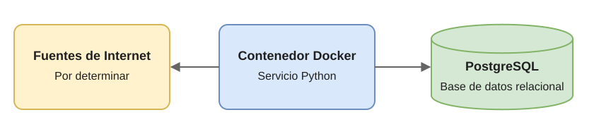

Histórico de valores liquidativos
Qué hace
El proyecto tiene como objetivo capturar y almacenar los valores liquidativos (NAV) de fondos de inversión para su consulta posterior.
Cómo funciona
La solución se basará en un servicio Python desplegado en un contenedor Docker, que obtendrá los datos de fuentes de Internet y los guardará en una base de datos PostgreSQL.
